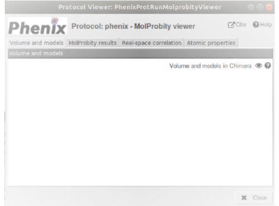

21. Phenix MolProbity protocol¶
Protocol designed to assess in Scipion the geometry of refined atomic structures without considering electron density maps by using MolProbity [Davis et al., 2004]. Integrated in cryo-EM validation tools of PHENIX software suite, MolProbity tool validates geometry and dihedral-angle combinations of atomic structures. MolProbity scores can guide the refinement process of the atomic structure to get a good fitting of the atomic structure to the cryo-EM density map. Adding a volume as input in Phenix MolProbity protocol is possible for PHENIX v. 1.13 and Real Space Correlation coefficients between map and model-derived map will thus be calculated. Additionally, experimental electron density maps give sense to the interpretation of geometry outliers.
- Requirements to run this protocol and visualize results:
- Scipion plugin: scipion-em
- Scipion plugin: scipion-em-phenix
- PHENIX software suite (tested for versions 1.13-2998, 1.16-3549, 1.17.1-3660 and 1.18.2-3874)
- Scipion plugin: scipion-em-ccp4
- CCP4 software suite
- Scipion plugin: scipion-em-chimera
- Scipion menu: Model building -> Validation (Fig. 21.1 (A))
Protocol form parameters (Fig. 21.1 (B)):
- Input Volume: (Optional) Electron density map previously downloaded or generated in Scipion. Only with PHENIX v. 1.13 Real Space Correlation coefficients between map and model-derived map will be calculated.
- Resolution (Å): Map resolution of the volume included in the Input Volume parameter.
- Input atomic structure: Atomic structure previously downloaded or generated in Scipion and fitted to the electron density map.
- Protocol execution:Adding specific map/structure label is recommended in Run name section, at the form top. To add the label, open the protocol form, press the pencil symbol at the right side of Run name box, complete the label in the new opened window, press OK and, finally, close the protocol. This label will be shown in the output summary content (see below). If you want to run again this protocol, do not forget to set to Restart the Run mode.Press the Execute red button at the form bottom.
Visualization of protocol results:
After executing the protocol, press Analyze Results and the results window will be opened ().
Fig. 21.2 Protocol phenix-molprobity. Taps to visualize MolProbity and Real space correlation results. Real-space correlation tap only appears with PHENIX v. 1.13.¶
Four taps are shown in the upper part of the results window:
- Volume and models: ChimeraX graphics window will be opened by default. Volume and atomic structure, if it is present, are referred to the origin of coordinates in ChimeraX. To show the relative position of atomic structure and electron density volume, the three coordinate axes are represented; X axis (red), Y axis (yellow), and Z axis (blue) (Fig. 5.3).
MolProbity results (Fig. 21.3):
Summary MolProbity:
- MolProbity Basic Statistics: Statistics computed by Phenix package to assess protein geometry using the same distributions as the MolProbity server:
- Ramachandran outliers: Percentage of residues assessed that show an unusual combination of their \phi (C-N-CA-C) and \psi (N-CA-C-N) dihedral angles.
- Ramachandran favored: Percentage of residues assessed that show a normal combination of their \phi (C-N-CA-C) and \psi (N-CA-C-N) dihedral angles. Ramachandran outliers and favored residues are detailed in the Ramachandran plot, shown below. Allowed residues are included in the small region comprised between favored and outlier regions of that plot.
- Rotamer outliers: Percentage of residues assessed that adopt an unusual conformation of \chi dihedral angles. Rotamer outliers, commonly used to characterize the conformation of protein sidechains, are detailed in Chi1-Chi2 plot, shown below.
- C-beta outliers: Number of residues showing an unusual deviation (higher than 0.25 Å) of the C\beta from its ideal position. This deviation is an indicator of incompatibility between sidechain and backbone.
- Clashscore: Score associated to the number of pairs of non-bonded atoms unsually close to each other, showing probable steric overlaps. Clashscore is calculated as the number of serious clashes per 1000 atoms. This value has to be as low as possible.
- RMS (bonds): Root-mean-square deviation of molecule bond lengths.
- RMS (angles): Root-mean-square deviation of molecule bond angles.
- Overall score: MolProbity overall score represents the experimental resolution expected for the structure model. This value should be lower than the actual resolution. The lower the value, the better quality of the structure model.
- Open in Coot: Interactive visualization and structure modification tool for Ramachandran, Rotamer and C\beta outliers, as well as severe clashes. Coot graphics window will be centered on the specific atom or residue outlier when it is clicked. Improvements of the atomic structure are allowed in and any modification can be saved in Scipion as usual (look at Help section: Saving an atomic structure after an interactive working session with Coot (Appendix Coot refinement). The interactive protocol box will appear hanging out of MolProbity.
- Missing atoms: For clarity, hydrogen atoms are not included.
- Basic Geometry: Bond Length Restraints: Bonded pairs of atoms outliers according to the bond restraints between pairs of bonded atoms. The Deviations table indicates the number of outliers and the number of restraints (in accordance with the geometry restraints library). Those outliers appear sorted by deviation (higher than 4 sigmas) in the Outliers list.
- Basic Geometry: Bond Angle Restraints: Bonded triplets of atoms outliers according to the angle restraints between triplets of bonded atoms. The Deviations table indicates the number of outliers and the number of restraints (in accordance with the geometry restraints library). Those outliers appear sorted by deviation (higher than 4 sigmas) in the Outliers list.
- Basic Geometry: Dihedral Angle Restraints: Bonded tetrads of atoms outliers according to the dihedral angle restraints between tetrads of bonded atoms. The Deviations table indicates the number of outliers and the number of restraints (in accordance with the geometry restraints library). Those outliers appear sorted by deviation (higher than 4 sigmas) in the Outliers list.
- Basic Geometry: Chilarity Restraints: Bonded tetrads of atoms outliers according to the chilarity restraints between tetrads of bonded atoms. The Deviations table indicates the number of outliers and the number of restraints (in accordance with the geometry restraints library). Those outliers appear sorted by deviation (higher than 4 sigmas) in the Outliers list.
- Basic Geometry: Planarity Restraints: Bonded groups of atoms outliers according to the planarity restraints between groups of bonded atoms. The Deviations table indicates the number of outliers and the number of restraints (in accordance with the geometry restraints library). Those outliers appear sorted by deviation (higher than 4 sigmas) in the Outliers list.
- Protein: Box validating protein geometry:
- Select plot: Box to select a plot to visualize: The Ramachandran plot or the Chi1-Chi2 plot.
- View plot: Visualization of the plot previously selected.
- Ramachandran outliers: List of Ramachandran residue outliers with their respective \phi (C-N-CA-C) and \psi (N-CA-C-N) dihedral angle values.
- Rotamer outliers: List of Rotamer residue outliers with their respective \chi dihedral angles.
- C-beta outliers: List of C\beta residue outliers with their respective angles (angular position of C-beta atom in radial space).
- Recommended Asn/Gln/His sidechain flips: Asn, Gln and His residues, harboring asymmetric sidechains, recommended to be flipped to form favourable van der Waals contacts and hydrogen bonds.
- Cis and Twisted peptides: Residues showing cis or twisted conformations that could be modeling errors.
- Clashes: Box to detail All atom-contact analysis, the list that contains all severe clashes (non-H atoms overlaping more than 0.4 Å) and that can be checked in Coot.
- Real-space correlation: (This tap will only appear with PHENIX v. 1.13 in case you include a electron density volume as input of the protocol) (Fig. 21.4):
- Real-space correlation to electron density:
- View Multi-criterion plot: Plot showing cross-correlation and B-factor values for each residue of the macromolecule over 100-residue regions. Additional validation information, such as Ramachandran, Rotamer or C\beta outliers, is also detailed, as well as severe clashes.
- Correlations Coefficients: Three Real-space correlation coefficients are computed [Afonine et al., 2018]:
- Mask CC: Correlation coefficient between experimental volume and model-derived map inside the mask region around the model.
- Volume CC: Correlation coefficient that considers only map regions with the highest density values, ignoring regions below a certain contouring density threshold. Particularly, in this case the N points with the highest density, inside the molecular mask, are taken into account.
- Peak CC: Correlation coefficient that considers only map regions with the highest density values, ignoring regions below a certain contouring density threshold. Particularly, in this case the N points with the highest density, simultaneously present in the model-calculated map and in the experimental map, are taken into account.
- Residue Type: Box to select a type of residue: protein residue, other (for example heteroatom), water or everything. Protein residue is selected by default.
- Show CC below: Box to select the maximum limiting value of correlation coefficient shown by the residue type selected.
- Table of Real-space correlation coefficients: List displaying the selected residues with correlation coefficient value lower than the maximum value selected above. Residues showing the lower correlation might indicate errors in modeling of specific regions of the model.
- Fourier shell correlations:
- Atom Mask Radius (Angstroms): Radius of the “Fourier Shell”, a spherical volume mask in Fourier space.
- Fourier Shell Correlation plot: FSC plot regarding the inverse of the spatial frequency.
- Atomic properties (Fig. 21.5): Atom numerical properties:
- Occupancies: Atomic property used in crystallography. It represents the fraction of molecules in which a specific atom is in a given position or conformation at any given time. The sum of occupancies has to be 1 in total. Occupancies of zero indicate that no experimental data support the position of the atom in the model.
- B-factor/ADPs: Temperature factors reflect the vibration status of the atoms in which the observed electron density constitutes an average of all the small motions. Low values (around 10) indicate low vibration of atoms, whereas high values (around 50) show atoms moving so much that locate them properly results difficult. This last is usually the case of atoms located at the protein surface.
- Isotropic B: Temperature factor constrained to be the same in all three directions. By clicking here, a table showing the statistics (Min, Max and Mean) of the isotropic B-factor is displayed.
Summary content:
SUMMARY box:Main statistics included in the above MolProbity Model Final Statistics table (an example can be seen in Fig. 12.4 (7)).
{kind=link}
{kind=link}
{kind=link}
{kind=link}
{kind=link}